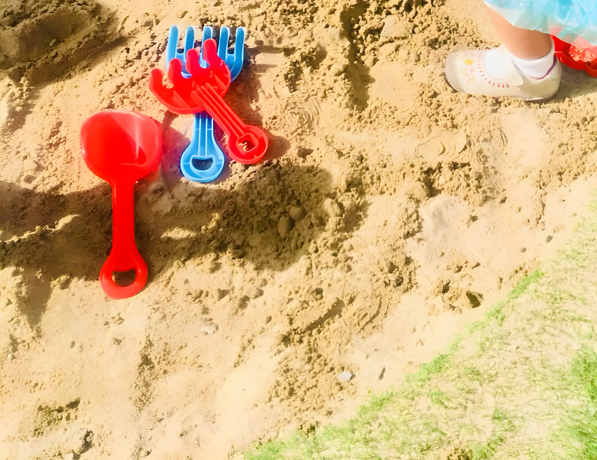
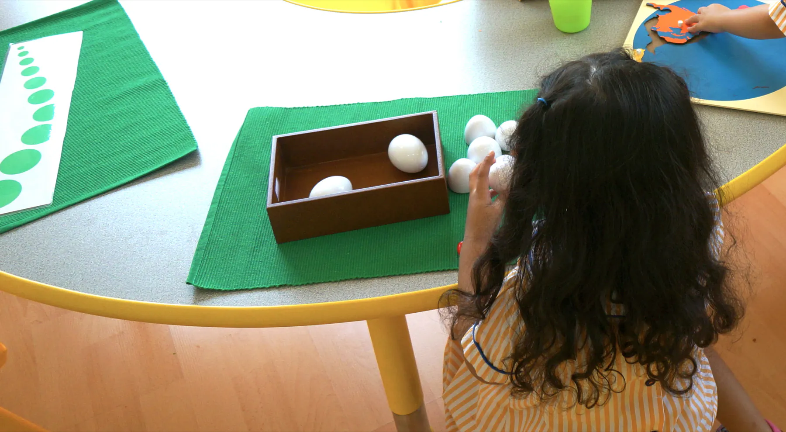
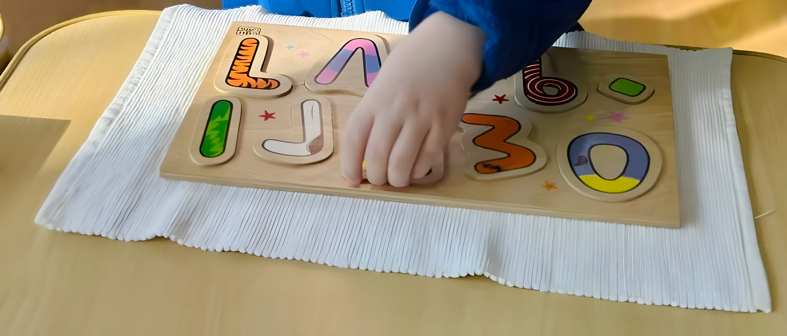

روضةLittle Wonders

روضة ثنائية اللغة في سار للأطفال من عمر 9 أشهر إلى 4 سنوات. نجمع بين منهج المرحلة التأسيسية البريطاني وطريقة منتسوري، بالعربي والإنجليزي.
التسجيل مفتوح طوال السنة1110 طريق 2934، مجمع 529، سار، قريب من شارع سار
صباحًا، أو عصرًا، أو يوم أطول
ثلاث خيارات للتسجيل. الفترة الصباحية والمسائية فيها نفس المنهج ونفس الأنشطة، فتختارون الوقت اللي يناسب عائلتكم.
الفترة الصباحية
8:00 – 12:00 للرضّع وما قبل الحضانة، و8:00 – 12:30 للحضانة.
الفترة المسائية
13:00 – 17:00. نفس تعليم الفترة الصباحية، للعائلات اللي تحتاج بداية متأخرة.
الصباحية + الرعاية النهارية
8:00 – 15:00. وجبات وسناكات إضافية، وقت لعب أطول، ووقت أكثر لطفلكم يكوّن صداقات ويبدع.
يتوفر أيضًا التوصيل المبكر. اسألونا لما تتصلون.
فصولنا
عشرة فصول حسب العمر. فصول صغيرة، تقودها معلمات مؤهلات مع معلمات متخصصات ومساعدات.
أي فصل يناسب طفلكم؟المبنى والساحات
قريب من شارع سار، بجانب جامع سار. صممته الروضة مع مصممين عالميين ليكون مكانًا هادئًا وآمنًا، بفصول واسعة ومشرقة. أثاث الفصول وألعاب الساحات مختارة بعناية للسلامة ومستوردة من الولايات المتحدة.
- منطقة لعب داخلية كبيرة فيها ألعاب إسفنجية
- منطقتا لعب خارجيتان
- حدائق واسعة وحديقة زراعة
- منطقة رمل مظللة
- مسار دراجات داخلي
- مطبخ مخصص للأطفال لحصص الطبخ الأسبوعية
- نظام صوت في كل فصل



المنهج البريطاني ومنتسوري، بالعربي والإنجليزي
منهجنا يجمع بين المرحلة التأسيسية البريطانية (EYFS) وطريقة منتسوري. المعلمات يتابعن كل طفل عن قرب، ثم يخططن المواضيع ويقدّمن المواد الجديدة خطوة بخطوة، فيتعلم كل طفل على قدر سرعته.
- التواصل واللغةالكلام والاستماع والاستعداد للكتابة، بلغتين
- المواد الحسيةالتعلم باللمس والتذوق والشم والسمع
- الرياضياتالفرز والمطابقة والعد، ثم الجمع البسيط والأشكال
- القراءة والكتابةربط الأصوات بالحروف وبداية القراءة والكتابة
- فهم العالممواضيع من الحياة الواقعية ورحلات تعليمية
- النمو الجسديرقص ومسرح وحصص رياضة أسبوعية
- الفنون والتصميمرسم وموسيقى وحركة ولعب أدوار
- الحياة اليوميةالاهتمام بالفصل، والتوازن وتناسق الحركة
كل معلمة عندها خمس سنوات خبرة على الأقل، وكلهن مؤهلات في منتسوري والمرحلة التأسيسية البريطانية.



أمان، وتواصل دائم
فصول صغيرة وعدد قليل من الأطفال لكل معلمة، عشان تتابع كل طفل عن قرب. ومبنى السلامة فيه أولوية، حتى في اختيار الأثاث.
- كاميرات مراقبة في كل فصل
- الفصول والمبنى كله تحت المراقبة.
- تسجيل دخول وخروج إلكتروني
- كل طفل يُسجَّل دخوله وخروجه إلكترونيًا.
- دخول آمن
- مبنى مؤمّن بالكامل بدخول إلكتروني ومراقبة.
- تطبيق لأولياء الأمور
- على آيفون وأندرويد للتواصل مع الروضة.
آراء أولياء الأمور
سألت إحدى الأمهات مجموعة Mums in Bahrain عن الروضة، وهذه بعض الردود كما وردت بالإنجليزية.
The place is spotless clean I didn’t see this in any nursery and they care about each child as an individual so the child feels so comfortable there!
Teachers are really involved in the children’s development, they have both native Arabic and English speaking teachers working hand in hand … I can see how much my son learned in both languages.
Something just felt right about the place; we unanimously agreed on sending our son here and havent been disappointed since enrolling him.
My son goes there for more than a year now and he is so happy there! He made so much progress in every way possible.
أسئلة يسألها الأهالي
لأي سؤال ثاني، اتصلوا على 3644 7000 أو 3655 4000، أو راسلونا على info@littlewondersbh.com.
من أي عمر تقبلون الأطفال؟
نقبل الأطفال من عمر 9 أشهر إلى 4 سنوات.
ما المنهج اللي تتبعونه؟
منهج المرحلة التأسيسية البريطاني (EYFS) مع طريقة منتسوري، بالعربي والإنجليزي. وضعته معلمات لهن خبرة في الاثنين.
ما أوقات الدوام؟
الصباحية من 8:00 إلى 12:00 للرضّع وما قبل الحضانة، وإلى 12:30 للحضانة. المسائية من 13:00 إلى 17:00. الصباحية مع الرعاية النهارية من 8:00 إلى 15:00. ويتوفر التوصيل المبكر.
وين مكان الروضة؟
1110 طريق 2934، مجمع 529، سار، قريب من شارع سار بجانب جامع سار.
ما الأوراق المطلوبة للتسجيل؟
عبّوا نموذج إبداء الاهتمام ونتواصل معكم. وعند التسجيل نطلب: نسخة من شهادة ميلاد الطفل، ونسخة من جوازه وإقامته، وسجل التطعيمات بالإنجليزي، وصورة شخصية، ونموذجي التسجيل والطبي، ونسخة من جواز وإقامة ولي الأمر الكفيل.

تعالوا شوفوا الروضة
1110 طريق 2934،
مجمع 529، سار، البحرين
قريب من شارع سار، بجانب جامع سار.